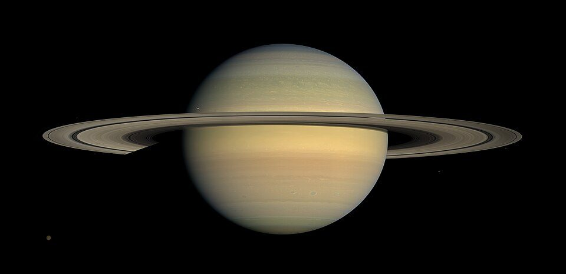
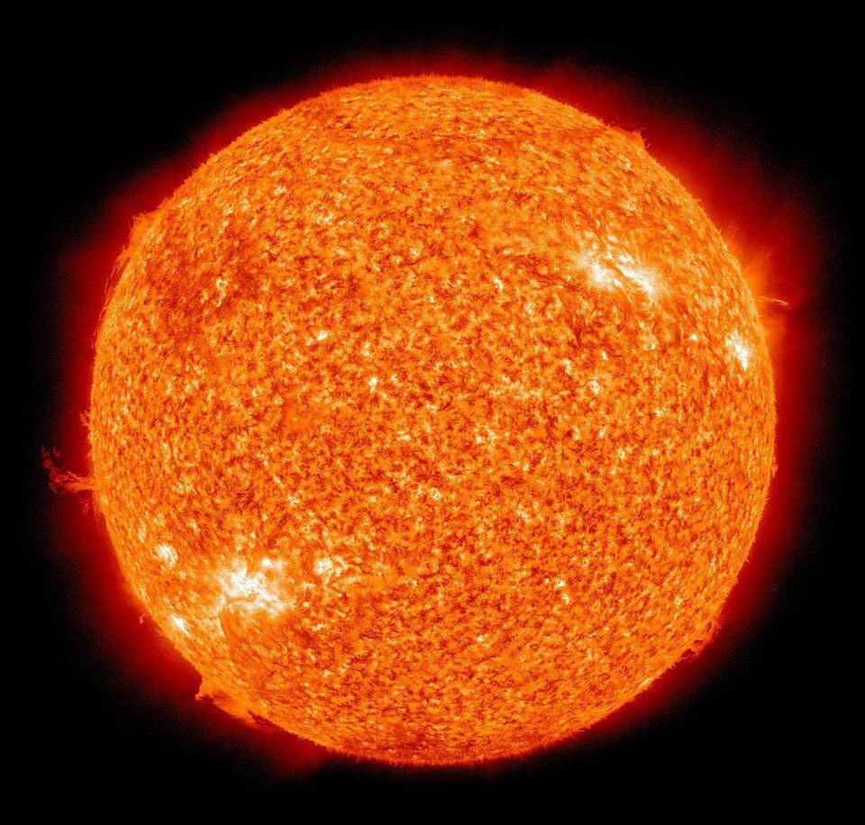
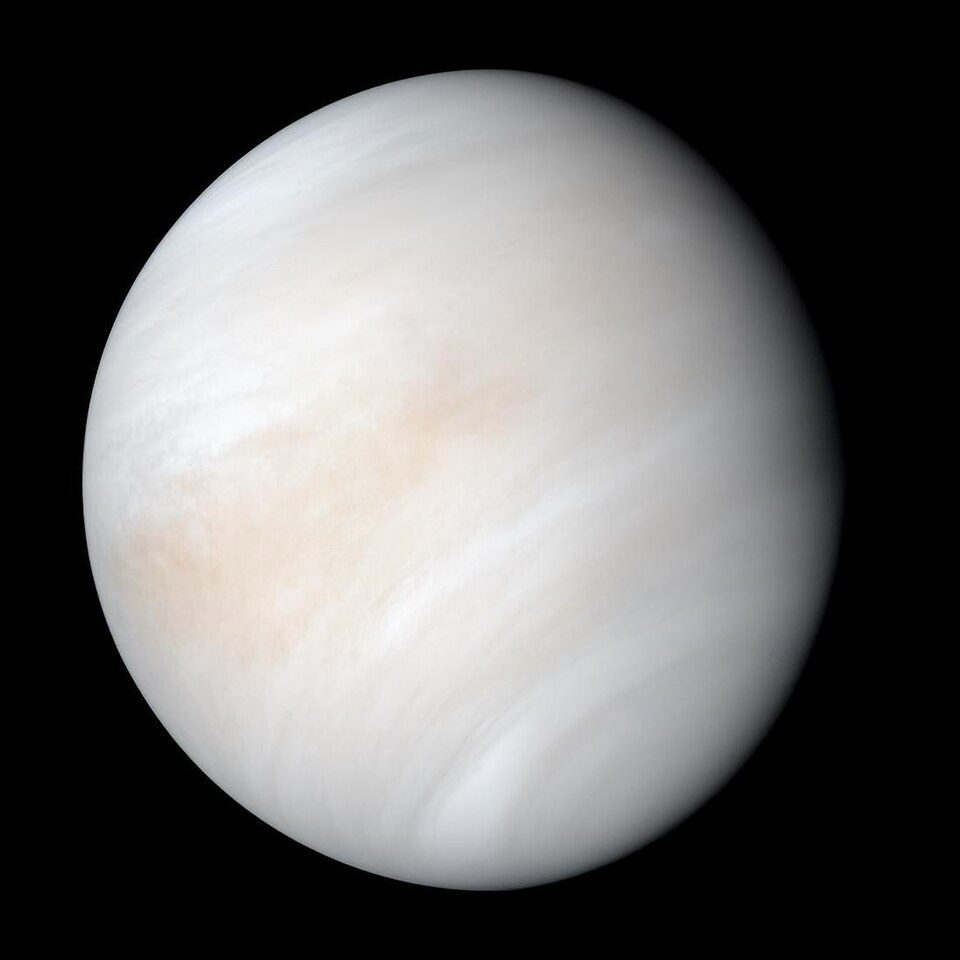
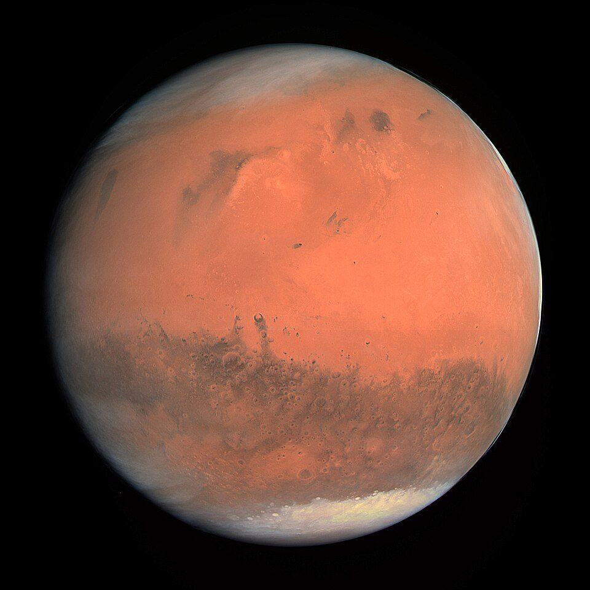
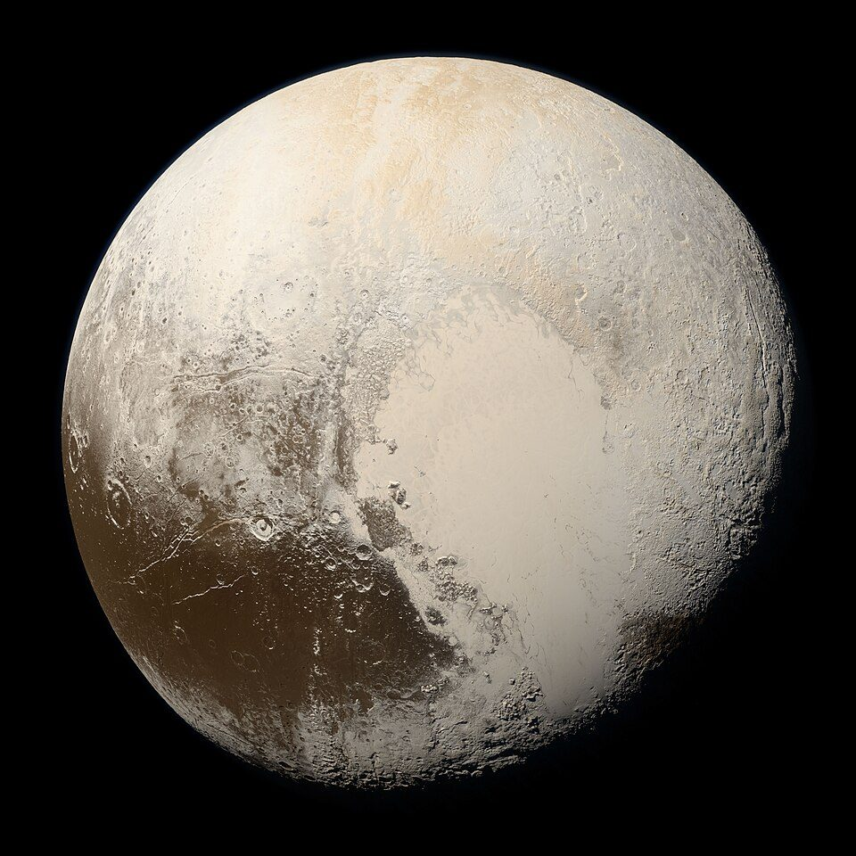
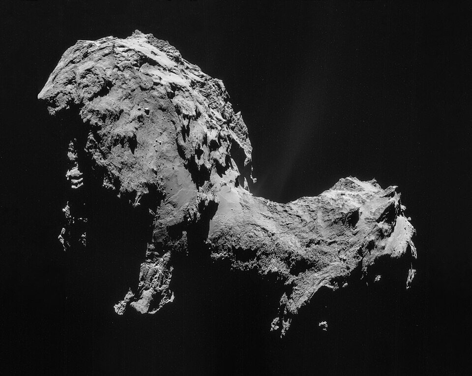

Universe · 14 articles
Solar system
The Sun, the eight planets, their moons, dwarf planets, asteroids and comets: everything that travels around us.
Our solar system formed 4.6 billion years ago from a cloud of gas and dust. Today it is made up of one star, eight planets, hundreds of moons and millions of smaller bodies. In these articles you will find each of them, with real photographs from the probes that have visited them, their key figures and the stories of how we discovered them.
 The solar systemOne star, eight planets, hundreds of moons and millions of smaller bodies that have travelled together for 4.6 billion years.
The solar systemOne star, eight planets, hundreds of moons and millions of smaller bodies that have travelled together for 4.6 billion years.
The SunAn ordinary star that, 150 million kilometres away, gives us light, warmth and the energy behind almost all life on Earth. MercuryThe smallest planet and the closest to the Sun: a cratered world of scorching days and freezing nights.
MercuryThe smallest planet and the closest to the Sun: a cratered world of scorching days and freezing nights.
VenusEarth's hellish twin: a planet of acid clouds and 465 °C where the Sun rises in the west. EarthThe only known planet with life and liquid water on its surface: our home, seen as just another planet.
EarthThe only known planet with life and liquid water on its surface: our home, seen as just another planet. The MoonOur only natural satellite: born from a giant impact, it drives the tides and is the only other world humans have walked on.
The MoonOur only natural satellite: born from a giant impact, it drives the tides and is the only other world humans have walked on.
MarsThe red planet: rusty deserts, the largest volcano in the solar system and traces of rivers that flowed billions of years ago. JupiterThe giant of the solar system: more mass than all the other planets combined, a storm bigger than Earth and nearly a hundred moons.
JupiterThe giant of the solar system: more mass than all the other planets combined, a storm bigger than Earth and nearly a hundred moons.- SaturnThe lord of the rings: a giant so light it would float in water, wrapped in ice and with more moons than any other planet.
 UranusThe ice giant that rolls on its side: a turquoise planet with seasons of 42 years of day or night.
UranusThe ice giant that rolls on its side: a turquoise planet with seasons of 42 years of day or night. NeptuneThe farthest planet: a deep blue world with the fastest winds in the solar system, discovered thanks to mathematics.
NeptuneThe farthest planet: a deep blue world with the fastest winds in the solar system, discovered thanks to mathematics. Moons of the solar systemSulphur volcanoes, oceans hidden under ice and methane lakes: moons are some of the most astonishing worlds we know.
Moons of the solar systemSulphur volcanoes, oceans hidden under ice and methane lakes: moons are some of the most astonishing worlds we know.
Pluto and the dwarf planetsPluto, Ceres, Eris, Haumea and Makemake: round worlds that fall short of being planets, and the Kuiper belt where most of them live.
Asteroids, comets and meteoritesThe leftover pieces of the solar system: rocks, dirty snowballs and the shooting stars that fall every night.